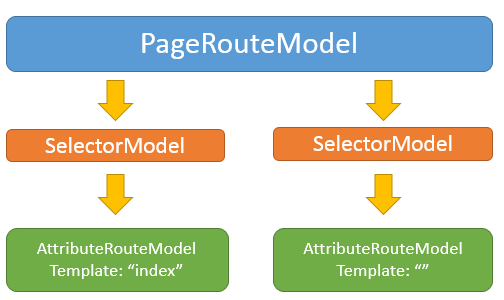
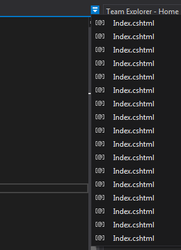
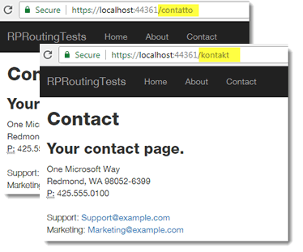

When a Razor Pages application starts up, the framework examines the files located in the Pages folder and generates a set of route templates based on the file path of each file, treating Index.cshtml as the default file for a folder. If a template has been added to the @page directive, that is also taken into consideration and the generated template is modified accordingly.
In this way, it is possible to specify that route data values can or should be part of the URL that matches the file, or to specify that the file is located using a URL that has no relationship at all with its file path. You also have recourse to the AddPageRoute method in Razor Pages Options, but all of these approaches to customisation only affect the routing to one file at a time.
PageRouteModel
The route template information for each page is stored in a PageRouteModel class. One PageRouteModel class is created for each navigable Razor Page at application startup. The routing information includes the file name and relative path of the Razor Page, and a collection of SelectorModel objects, each one containing details of the attribute route that can be used to reach a page. This information is held in an AttributeRouteModel object, which is where the route template is stored.
When the default routing conventions are used, one SelectorModel is generated for most pages. The default page (Index.cshtml) has two SelectorModels built - one for the "index" template and one for the empty string (""). When you use the AddPageRoute method, an additional SelectorModel is added to the PageRouteModel containing details of the template specified in the method call.
The following diagram depicts a simplified view of the PageRouteModel instance that is typically built for Index.cshtml:

IPageRouteModelConvention
The IPageRouteModelConvention interface is designed to allow customisation of the PageRouteModel to override the default conventions. The interface has one member that needs to be implemented - the Apply() method. It is in this method that you can access metadata about the current routing set up and modify or add to it as required.
To summarise, there are three steps to customising Razor Pages routing:
- Create a class that implements
IPageRouteModelConvention - Implement its
Applymethod - Register the class with Razor Pages Options
Here are two examples that show how to do this. This first example illustrates how to replace the generated route templates with new ones, so that pages are found using a different algorithm, rather than a simple match of file path to URL. The second shows how to add more route templates on top of the generated one so that users can find a page using URLs in their own language.
Creating A New Convention
As your Line Of Business (LOB) application grows, you are likely to have many feature-related folders in the application, each containing files named after the action that they are responsible for: an Index.cshtml, an Edit.cshtml, a Details.cshtml and so on. After a while, having multiple Index.cshtml files open in your IDE becomes confusing:

So you decide instead to create files named after the feature and the action: the Index.cshtml file in the Orders folder becomes OrdersIndex.cshtml, Edit.cshtml become OrdersEdit.cshtml and so on. However, you still want the OrdersIndex.cshtml page to act as a default page, and you want users to be able to navigate to /orders/edit, orders/detail and so on.
The following class shows the first two steps required to implement a new routing convention:
public class CustomPageRouteModelConvention : IPageRouteModelConvention
{
public void Apply(PageRouteModel model)
{
foreach (var selector in model.Selectors.ToList())
{
var template = selector.AttributeRouteModel.Template;
if (template.Contains("/"))
{
// is a folder
var segments = template.Split(new[] { '/' }, StringSplitOptions.None);
if (segments.Count() == 2)
{
selector.AttributeRouteModel.Template = $"{segments[0]}/{segments[1].Replace(segments[0], string.Empty).Replace("Index", string.Empty)}".TrimEnd('/');
}
else
{
throw new ApplicationException("Nested folders are not permitted");
}
}
}
}
}
The class implements the IPageRouteConventionModel interface and provides an implementation of the Apply method. This is executed for every page found by the Razor Pages framework. The method iterates the collection of SelectModel objects that belong to the current PageRouteModel, and acquires a reference to the template. If the template includes a forward slash, it belongs to a page in a sub folder, that is, not the Pages root folder. If that is the case, the folder name is removed from the template, so for Orders/OrdersEdit.cshtml, the template changes from "orders/ordersedit" to "orders/edit". "Index" is replace with an empty string.
In addition, if there are more than two segments in the template, an Exception is raised. We don't want any sub folders being added to the features folders.
The final step involves registering the new convention with RazorPagesOptions:
public void ConfigureServices(IServiceCollection services)
{
...
services.AddMvc().AddRazorPagesOptions(options =>
{
options.Conventions.Add(new CustomPageRouteModelConvention());
})
.SetCompatibilityVersion(CompatibilityVersion.Version_2_1);
}
Catering For Multiple Languages
If you are providing a web site for a global audience, you might want to provide them with the courtesy of friendly URLs in their language. Or you might want to do this for SEO purposes. Italians would be able to reach the contact page at domain.com/contatto. Germans could reach it at domain.com/kontact etc. You could add calls to the MapPageRoute method in Startup (see Friendly Routes). But this approach won't scale very well if you have hundreds of pages and cater for an increasing number of languages. The method calls will grow exponentially.
What you can do instead is to use the IPageRouteConventionModel interface to add additional patterns based on a the contents of a database or similar. To illustrate this, here is the definition of a simple service that emulates obtaining the translations of the page names:
public interface ILocalizationService
{
List<LocalRoute> LocalRoutes();
}
public class LocalizationService : ILocalizationService
{
public List<LocalRoute> LocalRoutes()
{
var routes = new List<LocalRoute>
{
new LocalRoute{
Page = "/Pages/Contact.cshtml",
Versions = new List<string>{"kontakt", "contacto", "contatto", "kontakta" }
}
};
return routes;
}
}
public class LocalRoute
{
public string Page { get; set; }
public List<string> Versions { get; set; }
}
And here is how that service is consumed within a PageRouteModelConvention class:
public class LocalizedPageRouteModelConvention : IPageRouteModelConvention
{
private ILocalizationService _localizationService;
public LocalizedPageRouteModelConvention(ILocalizationService localizationService)
{
_localizationService = localizationService;
}
public void Apply(PageRouteModel model)
{
var route = _localizationService.LocalRoutes().FirstOrDefault(p => p.Page == model.RelativePath);
if (route != null)
{
foreach (var option in route.Versions)
{
model.Selectors.Add(new SelectorModel()
{
AttributeRouteModel = new AttributeRouteModel
{
Template = option
}
});
}
}
}
}
This convention also needs to be registered in StartUp, along with the service:
public void ConfigureServices(IServiceCollection services)
{
...
services.AddMvc().AddRazorPagesOptions(options =>
{
options.Conventions.Add(new LocalizedPageRouteModelConvention ());
})
.SetCompatibilityVersion(CompatibilityVersion.Version_2_1);
services.AddTransient<ILocalizationService, ILocalizationService>();
}
Now an individual page can be reached by any number of registered languages:
